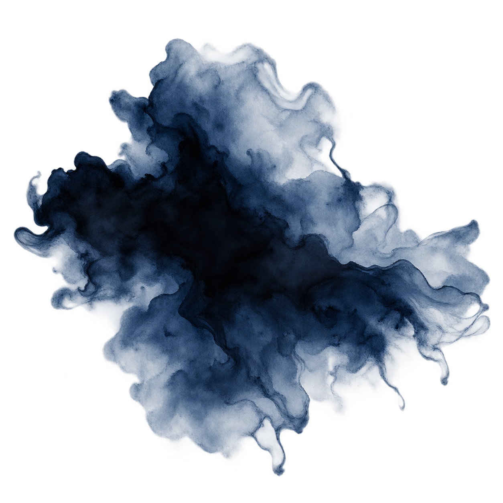

聲목소리
사시사철 조금 쉰 음성. 원래의 음성은 제법 낮은 축이나 목 안쪽이 마른 탓에 끝소리가 쉬이 긁히고 갈라진다. 말을 오래 하면 점차 탁해지는 것도 예삿일. 운을 오래 본 이들은 으레 그것이 본래 목소리인 줄 안다.
" 녀석, 낯짝 하고는… "

외관
새하얗다기보다는 옅은 잿빛 한 방울을 탄 듯한 은백색 머리칼. 숱 많은 머리를 높이 묶고 남은 자락은 등을 따라 길게 늘어뜨렸다. 앞머리 몇 가닥은 손질을 포기한 양 마음대로 흘러내려 뺨과 눈가를 가렸다. 이를 동여맨 것은 빛이 여러 번 바래 이제는 먹청색에 가까워진 푸른 천. 해지면 꿰매고 낡으면 다시 덧대기를 몇 해나 거듭하였는지 군데군데 기운 자국과 덧댄 흔적이 겹겹이 남아, 당초 어떠한 모양이었는지는 이제 주인조차 제대로 기억하지 못할 성싶다. 입으로는 별 값어치 없는 물건이라 대수롭지 않게 이르면서도, 정작 다른 끈으로 갈아 맬 생각만큼은 좀처럼 없는 모양이다.
눈은 흐린 날의 하늘을 닮은 옅은 회청색으로, 특히나 볕이 독한 날이면 눈이 쉬이 말라 습관처럼 눈꺼풀을 반쯤 내리고 다닌다. 입술 역시 사철 마른 편이라, 비가 오래 오지 않을 때면 끝이 튼다.
옷차림은 대체로 수수하였다. 짙은 회색빛 의복 위에 검푸른 포를 걸쳤으되 눈에 띄는 치장은 달지 않았으며, 허리춤에는 언제나 장검 하나가 비스듬히 자리하였다. 그 검을 얼마나 오래 손에 익혀 왔는지는 손을 보면 굳이 묻지 않아도 알 만했다. 손바닥이며 손가락 마디마다 칼자루를 수없이 쥐었다 놓은 이에게 으레 남는 굳은살이 두텁게 배어, 쉽사리 무를 듯하지 않았다.
月影 / 人事錄
FILE NO. 01-P
성격
어울리되 휩쓸리지 아니한다.
팔자가 사나우면 사람 성정도 모질어진다던가. 허나 서른두 해를 살아온 운을 보면 꼭 그런 것만도 아닌 모양이다.
운은 자못 잘 웃는 사내였다. 처음 보는 이와 상종하기를 어려워하지 않았으며, 한담이 길어지면 제 쪽에서 먼저 수작 한마디를 얹기도 하였다. 성대한 환대를 베푸는 성품은 아니로되 찾아오는 이를 박대하지 않았으며, 꺼림칙한 자라 하여 처음부터 낯을 붉히는 법도 드물었다. 좋은 것은 좋다 이르고 싫은 것은 싫다 하되, 그 호오 하나로 사람의 전부를 헤아리려 들지는 않았으니 무릇 지난 일에도 그러하였다.
“스승? 죽었지. 내가 탈태하던 때에.”
그 무거운 말 뒤에 따르는 것은 고작 물 한모금이었다.
“오래된 일이라 자잘한 건 기억도 희미해. 왜, 죽은 사람 묘까지 파헤칠 셈인가?”
굳이 사실을 감추는 사람은 아니었다. 제게 있었던 일쯤이야 누가 묻던 대강 일러주었으니. 다만 그날 무엇을 느꼈느냐, 괴로웠느냐, 아직 미련이 남았느냐고 캐묻기 시작하면 슬그머니 말끝이 흐려지는 것이다. 지난 일을 숨기지는 않으나 지나간 마음까지 남에게 헤집어 내놓아 보일 까닭은 없다 여기는 모양이었다.
기실 제 일에는 이렇듯 범연하면서도 남의 낯빛을 읽는 데에는 제법 눈이 빨랐다. 소매 아래 감춘 상처며 한쪽으로 흐트러진 걸음, 평소보다 더딘 젓가락질까지. 모르는 체 지나치면 그만일 것을 한참 바라보다가 종내 혀를 차곤 했다.
“아픈 게 숨긴다고 어디 숨겨지겠나.”
여상한 낯으로 꾸짖으며 다가오는 손에는 어느새 물이며 약이며 하는 것들이 들려 있었다. 하여 그와 가까워지는 일 자체는 그리 어렵지 않았다. 다만 어디까지 가까워졌는가를 가늠하는 것은 또 별개의 문제였으니, 겉문은 늘 활짝 열려 있는데도 안채까지 드는 길은 사뭇 멀었다.
법도와 분수를 넘지 아니한다
남의 심사에는 함부로 발을 들이지 않았다. 말하기 싫다 하면 묻지 않고 홀로 있고 싶다 하면 자리도 곧잘 비켜주었다. 제 속내를 캐묻는 이를 달가워하지 않는 만큼 남의 내막에도 억지로 손대지 않았으니, 여기까지 보면 퍽 분별있는 사람이겠으나…
문제는 일이 제 눈 앞에서 벌어질 때였다. 누가 금 간 담장을 굳이 타넘겠다 하면 처음에는 한마디쯤 일러둔다. 그쪽 돌이 약하다, 발을 잘못 디디면 떨어진다. 그래도 기어코 올라가겠다고 고집을 부리면 그때부터는 낯에 기막히다는 빛이 어리기 시작한다.
“ 이젠 친우가 없다 못해 바닥과 인연을 맺을 셈인가?”
말린다고 듣지 않을 자를 붙잡아 끌어내릴 위인은 아니었다. 대신 아래에 남아 있다가 정말로 떨어지기라도 하면 곧장 받아내는 쪽이었으니, 운의 참견은 대개 그러하였다. 돌아가는 꼴이 영 그릇되었다 싶으면 슬쩍 손을 얹고, 여럿이 매달려 반나절을 허비할 일을 제 손으로 끝낼 수 있다 싶으면 종내 일을 넘겨받는다. 남을 제 뜻대로 부리고 싶은 욕심이라기보다는 흐트러진 판을 흐트러진 채 내버려두는 것이 영 마뜩잖은 성미였다.
그런 그의 면모는 월영에서도 크게 다르지 않았는데, 사람 하나 두들겨 패고 돌아온 자가 의기양양하여 죽이지는 않았다 변명이라도 하면,
“장하네.”
한 번 고개를 끄덕였다가,
“반쯤 죽인 것은 공덕이라도 되는 줄 알았어.”
하며 곧 혀를 차대었다.
그렇다고 성현 흉내를 내며 사람을 교화하려 드는 것은 아니다. 죄짓지 말라 훈계할 위인이었으면 애초에 월영에 그리 오래 남지도 못했을 터. 제가 벌인 일은 제가 거둘 것. 남에게 화를 떠넘기지는 말 것. 그저 그 정도의 셈속만은 제법 엄정하였다.
만난 자는 필시 헤어짐이 있다.
會者定離 회자정리
정이 얕은 사람이라 하기엔 자잘한 것을 지나치게 잘 기억하였다.
어느 이가 매운 것을 못 먹었는지, 누가 오른손보다 왼손을 먼저 쓰는지. 지난번에 베인 자리가 아직 덜 아물지는 않았는가. 무심히 들었던 말도 몇 달 뒤 엉뚱한 자리에서 다시 꺼내곤 하니, 정작 본인은 기억하려 애쓴 적 없노라 한다.
그러면서 떠나는 이를 붙잡는 일에는 영 재주가 없었다.
열두 살에는 가족과 생이별 하였고 열일곱에는 스승을 잃었으며, 운림에서 새로 얻은 인연마저 종국에는 뿔뿔이 흩어지고 말았으니. 만난 이가 떠나는 일을 천지간 으레 있는 이치처럼 여기게 된 것도 그 때문이었을까.
“가겠다는데 어찌 잡아.”
싫어졌다면 더더욱 붙들 까닭 없다는 말이었다. 그런데도 상대가 정녕 등을 돌리고 나면 그 그림자가 시야에서 다 사라질 때까지 자리를 뜨지 않는 사람 또한 운이었다. 그러고서도 지나간 것은 지나간 것이라 잘라 말한다. 어머니와 아우는 이제 남이나 진배없다 하고, 운림 역시 오래전에 등진 곳일 뿐이라 이른다. 그런 주제에 머리에는 스물아홉 해 묵은 푸른 매듭이 달려있고. 해지면 기우고 찢어지면 덧대어, 이제는 본래 천이 어디까지 남았는지조차 모를 물건을 끝끝내 버리지 않았다. 누군가 그 모순을 들추기라도 하면 그것과 이것은 다른 일이라며 슬며시 시선을 피하지만… 그 둘을 정말 명백히 갈라 설명할 수 있었더라면, 어쩌면 진즉 그 매듭부터 버렸을지도 모르는 일이다.

전승한 요괴 또는 신수 종류
강철이
예부터 사람들 입에 오르내리던 괴물. 강철이가 한 번 지나간 자리에는 마른 들과 갈라진 논, 볕 아래 누렇게 타들어 간 초목만 남는다 하여, 옛사람들은 가뭄과 흉년의 흉조를 일러 그 소행이라 하였다.
운이 힘을 펼친 뒤 남는 광경 또한 그 옛 전승과 기이하리만치 닮았다. 땅은 메마르고 풀잎은 생기를 잃으며, 머문 자리마다 마치 오래 비 한 방울 들지 않은 듯 삭막한 흔적이 남는 것이다.
허나 정작 그 힘을 이어받은 본인은 비 오는 날을 유달리 좋아하고, 틈만 나면 물가를 찾아다닌다. 가뭄을 몰고 온다는 괴물의 힘을 품고서 물을 좋아한다니, 세상사란 본디 이처럼 이치에 맞지 않는 구석 하나쯤은 품고 있는 법인가 보다.
그릇과 이능력
그릇 — 파수
이능력
渴脈갈맥
갈할 갈渴, 맥 맥脈.
물줄기의 맥을 말린다는 뜻. 생물과 무생물을 막론하고 그 안에 든 수분을 급격히 소진시키는 힘이다.
허나 강철이의 기운은 밖으로 끌어내지 않아도 먼저 제 그릇부터 조금씩 말려간다. 하여 운은 능력을 쓰든 쓰지 않든 늘 목이 말랐다. 물 한 동이를 들이켜도 갈증이 온전히 가시는 법이 없으며, 볕이 성한 날이면 입과 목은 더욱 쉬이 메말랐다.
그러한 상태에서 기를 바깥으로 뻗으면, 평소 제 몸을 갉아먹던 마름이 고스란히 타물他物로 옮겨갈 따름이었다.
사람도 짐승도 물을 품은 육신인즉, 갈맥을 피하지 못한다. 다만 생명이 붙은 것은 스스로 기혈을 돌리는 까닭에 마른 나무나 천 따위보다 훨씬 더디게 영향을 받았다.
거리가 가까울수록 힘은 짙어지고, 살이 맞닿으면 그 속도 또한 배가되었다. 닿는 면이 넓을수록 효과가 크니 손끝보다 손바닥이, 손목보다 팔과 몸통이 더욱 위협적이었다.
잠깐 스친 정도로 사람 하나가 말라 죽는 일은 없다. 처음에는 그저 목이 타고 피부가 당기는 정도이나, 오래 붙들리면 눈앞이 어질해지고 팔다리에 힘이 빠진다. 더 몰아붙이면 근육이 굳으며 경련이 일고, 끝내는 몸 안의 물기마저 크게 줄어 제 몸 하나 제대로 가누기 어려운 지경에 이른다.
때문에 운은 검을 쓰면서도 한 손쯤은 되도록 비워두었다. 칼로 베는 것보다 잡는 쪽이 더 무서운 사람이라 하여도 아주 그른 말은 아니었다.
수계 파수의 힘이라 하여 갈맥 앞에서 예외가 되지는 않았다.
다가오는 수류의 세를 깎고, 수막을 얇게 하며, 자욱한 물안개를 걷어낼 수 있다. 다만 동급의 파수가 온힘을 다해 쏟아붓는 물을 손짓 한 번으로 죄 말려버릴 만큼 절대적인 힘은 아니었다. 상대가 끊임없이 물을 불러낸다면 운 또한 그만큼 계속 기를 소모해야 했다.
도리어 흥미로운 것은 같은 편일 때였다. 물기가 넉넉한 곳에서는 갈맥이 제 몸의 수분을 덜 탐하였으므로, 수계 파수가 가까이 있으면 운의 몸도 한결 수월해졌다.
하여 그가 유독 물을 쓰는 파수에게 후하다는 말이 돌더라도 딱히 부정하기 어려웠다. 정작 본인은 어디까지나 상생相生을 도모하는 것뿐이라 우기겠지만.
상처를 낫게 하지는 못하되, 흐르는 피를 멎게 할 수는 있었다. 흘러나온 피와 상처 언저리의 물기를 억지로 말려 피를 굳히는 방식이다. 위급할 때에는 목숨을 붙들어둘 수 있으나, 상처 주변의 살까지 함께 상하며 고통도 심하고 흉 역시 쉬이 남았다.
그런 까닭에 운은 이를 두고 치유라 부르는 것을 썩 달가워하지 않았다. 살아 있게 만드는 것과 온전히 낫게 하는 것은 엄연히 다른 일이므로.
갈증은 상시. 그 위에 능력 사용량에 따라 더해진다.
平時평시
목이 쉬고 입술이 튼다. 눈이 쉬이 말라 볕을 오래 보기가 괴롭다. 오랫동안 밭일을 한 이들처럼 손끝이 쩍쩍 갈라지는 일도 드물지 않다. 운이 볕 좋은 날 본래 목소리를 아끼는 것도 대개 이 때문이었다.
過用과용
힘을 지나치게 끌어내면 먼저 코피가 나고 몸 안쪽으로 열이 오른다. 이윽고 어지럼이 들며 손끝이 떨리고, 종아리와 손가락에 느닷없는 경련이 찾아든다.
물을 마시면 얼마간 가라앉으나, 기를 계속 소모하면 채우는 속도보다 마르는 속도가 앞선다. 그때부터는 물을 들이켜는 일조차 임시변통에 지나지 않았다.
그 뒤에는 제 안의 물기와 세간의 물기 사이를 가르는 경계마저 흐려지고, 갈맥은 더는 운의 뜻을 묻지 않고 가까운 것부터 닥치는 대로 말리기 시작한다.
우물의 수위가 낮아지고 젖은 흙에는 금이 간다. 풀이 누렇게 타들어 가며, 사람과 짐승 또한 그 영향에서 벗어나지 못한다. 그리고 그 한가운데 있는 운 본인도 예외는 아니었다.
길라가 공명하여 흐트러진 기를 바로잡는다 한들, 이미 빠져나간 물기까지 되돌릴 수는 없는 탓에 폭주가 가라앉은 뒤에는 며칠이고 죽다 살아난 사람처럼 물만 찾아 헤매는 꼴이 되곤 하였다.
기타
이름난 산천도, 번화한 장시도 없는 곳. 논 몇 마지기와 밭뙈기, 해마다 하늘 눈치나 보아야 하는 여염의 농가들이 옹기종기 모여 사는 고을이었다. 그중에서도 별반 내세울 것 없는 집안의 맏이로 태어났으니, 애당초 그 출생에 무어 거창한 징조 같은 것이 있었던 것은 아니었다.
다만 그해에 한 가지 특이한 것이 있다면, 비가 귀하였다.
처음 한 해는 흉년이라 하였다. 이듬해까지 하늘이 야박하자 올해 팔자가 몹시 사납다며 탄식하였고, 삼 년째에도 장마가 비껴가자 사람들의 입과 눈은 차차 다른 것을 찾기 시작하였다. 논바닥은 거북이 등껍질처럼 죽죽 갈라지고, 잘 여물지 못한 볏대는 누렇게 말라 고개를 숙였다. 샘은 얕아지고 우물에는 긴 두레박을 내려도 흙내 섞인 부연 물이나 겨우 올라왔다.
사람이 먹고살 만하면 하늘을 탓하고 말 것을, 궁핍이 오래되면 으레 가까운 데서 허물을 찾는 법. 마침 그 무렵에 태어난 아이 하나가 있었다. 처음에는 늙은이 몇이 우스갯소리처럼 입에 올렸다 한다.
“저 집 아이가 난 뒤로 하늘이 영 메말랐구먼.”
그러나 농담은 두세 사람의 입을 건너면 풍설이 되고, 풍설이 오래 묵으면 당사자의 팔자가 된다. 그렇게 어느새 운은 재수 사나운 아이, 혹은 물을 몰아낸 아이로 불리었다.
그런 그가 세 살 되던 무렵이었을까, 탁발하던 승려 하나가 마을을 지나다 아이를 유심히 바라보더니 입을 열었다. 어린것에게 마른 기운이 붙었다느니, 물 가까이 두는 편이 좋겠다느니 하는 말들. 지금으로서는 그 말이 사람을 달래려 지어낸 방편이었는지 아니면 정말 무언가를 보았는지 알 길이 없었다. 그러나 운의 어머니에게는 그 진위가 그리 중요하지 않았던 듯하다. 궁핍한 사람이야 볏짚 한 오라기에도 손을 내미는 법이니. 얼마 없는 풀로 쑨 죽 한바가지를 내밀며 간청하자 승려는 쪽빛 천을 길게 찢어 매듭을 지어주며 두 가지를 일렀다고 한다.
물을 가까이 하게 하시오.
이 매듭만큼은 쉬이 끊어지지 않도록 하고.
그리고 떠난 승려의 말을 따라 행한지 몇 개월도 되지 않은 이듬해 봄, 공교롭게도 비가 내리기 시작했다.
그러나 그것으로 일이 잠잠해졌느냐 하면 도리어 반대였다. 액막이를 하고서야 비가 내렸으니 애초에 아이에게 무언가 있었던 것이 아니냐는 소리가 따라붙었다. 어린 운에게는 당최 알 수 없는 일이었다. 태어난 것 말고는 한 일이 없건만.
六歲6세
그 무렵까지도 운의 아비는 집에 붙어 있었다. 마을 사람들이 아들을 두고 궂은 말을 하면 성을 내기도 하였고, 아이 앞에서는 그런 소리를 입 밖에 내지 말라며 막아서기도 했다 한다. 허나 사람이란 곡진한 마음만으로 일생을 버티는 법은 없는지라.
몇 해를 내리 농사가 변변치 못하였다. 빚은 점차 감당할 수 없는 속도로 불고, 빌린 곡식은 갚는 날보다 먹어 없애는 날이 빨랐다. 남들의 입에 오른 자식을 두고 처음에는 역정을 내던 사람이었건만 어느 날부터인가 그는 점차 아무 말도 하지 않기 시작했다고 한다.
그리고 운이 여섯 살이 되던 무렵. 아비는 결국 모습을 감추었다. 어디로 갔는지, 새 살림이라도 차렸는지, 아니면 끝내 어느 길바닥에서 굶어 죽었는지. 모자는 알지 못하였다. 운 역시 뒤에 가서 굳이 알아보려 하지 않았다. 허나 뻔한 일이게도 남은 세 식구의 살림은 날이 갈수록 궁색해졌다.
十二歲12세
어린 아우는 그것을 모르고 받아먹고, 맏이는 주린 배를 채우고파 알아도 모르는 체하였다. 여름에는 여기저기 품이라도 팔았지만 겨울이 되자 먹을 것은 더욱 더 귀해졌다. 하루 한 끼가 두 끼보다 익숙해지고, 묽은 죽 한 그릇으로 셋이 저녁을 삼는 날이 늘어갔다.
그러다 운이 열두 살이 되던 무렵에는… 더이상 버틸 도리가 여의찮았다.
먼저 입을 뗸 것은 운이었다. 셋이 붙어 굶느니 하나쯤 줄어드는 편이 낫지 않겠느냐고. 그러나 아이에게 철없는 소리라 하기에는 비쩍 골은 막내아이가 눈에 밟혔다. 날 때부터 잘 얻어먹지 못해 바싹 마른 막내에 비하면 맏이 아이는 훨씬 강건해보였다…
결국 그해, 모자는 서로 다른 길을 들었다. 어머니는 어린 아우를 데리고 그나마 일거리가 있다는 고을로 향했고, 운은 혼자 품팔이를 찾아 다른 길을 택했다.
훗날 유화를 통해 소식을 얻어보니, 다행히도 어머니와 아우는 살아 있었다. 심지어는 재혼을 하였는지 전보다 훨씬 살림이 나아져 하루에 세 끼니를 꼬박꼬박 챙겨먹는다고도 하였다. 그런 호재를 듣고도 운은 그들을 찾아가지 않았다. 사람이 이미 수 년을 따로 살았다면 핏줄 하나만으로 다시 한집 식구가 되는 것도 우스운 일 아니냐는 것이 그의 언사였다. 하지만 그러면서도 올해로 아우의 나이가 스물일곱이라는 것 만은 잊지 않았다.
十三歲13세
이 고을에서 품을 팔았다가 저 고을로 밀려나고, 날이 저물면 외양간이며 빈 행랑이라도 빌려 몸을 누이던 시절. 한창 자랄 나이의 아이가 유리걸식하는 꼴이야 난세 아니라도 흔한 법이니, 처음에는 그 역시 운을 특별히 여겼던 듯하지 않다.
다만 며칠을 두고 보아도 아이가 영 떠날 기미가 없었던 모양이다. 그리하여 어쩌다 한 끼를 얻어먹고, 또 어쩌다 하루를 더 묵었으며, 그렇게 엿새가 열흘 되고 한 철이 되었다. 누구도 제자라 이름 붙인 적 없건만 어느새 검 한 자루를 쥐여주고 있었으니, 사람의 연緣이란 본디 이처럼 앞뒤가 없는 것인지도 모른다.
그렇게 모시게 된 운의 스승은 한때 화랑에 적을 두었던 길라였다.
족보를 더듬어 자랑할 만한 문벌은 없었으며 오히려 젊은 날에는 그 때문에 화랑을 믿었다 한다. 미천한 집에서 났든 귀한 집에서 났든 그릇으로 깨어나면 한데 모아 가르치고, 글과 무예를 익혀 나라에 쓰이게 한다 하니, 세상에 이만한 공평이 또 어디 있겠느냐고.
사람이 제 눈으로 보기 전에는 제법 많은 것을 믿을 수 있는 법. 운의 스승도 처음 몇 해는 그러하였다.
허나 문 안에 오래 머물면 기둥의 썩은 자리까지 보이는 법이라, 차츰 눈에 걸리는 것이 늘었다. 험한 길에는 으레 이름 없는 낭도가 먼저 나섰고, 한 사람의 허물은 집안의 위세로 가벼워지는가 하면 다른 사람의 실수는 값싼 목숨값으로 치러졌다. 그것을 차별이라 불렀는지 세상 이치라 여기며 참았는지는 이제 알 도리 없다. 다만 그 자신도 몇 차례 감찰의 일을 거들었다는 것만은 운에게 숨기지 않았다. 그리고 그중 한 가지 일이 운의 스승의 마음에 오래도록 마음에 남았던 듯하다.
한 때는 외딴 촌락에 숨어 살던 어린 각성자를 찾아내 화랑에 들인 적이 있었다 한다. 당시에 스승은 제가 좋은 일을 하였다고 여겼더랬다. 숨어 살다가 폭주하여 죽느니 제대로 길라를 붙이고 무예를 익히는 편이 낫지 않겠는가. 아이에게도 살길이요, 그 부모에게도 복이리라 믿었다.
그러나 한참 뒤에 소식이 궁금하여 찾아본 그의 귀에 들려온 것은 뜻밖의 부고 소식이었다.
훈련 중이었다는 말도 있었고, 변방에 내보냈다는 이야기도 있었다. 누구의 말이 참이었는지는 스승조차 끝내 몰랐다. 이미 죽은 아이 하나의 행적을 두고 높은 이들이 오래 입씨름할 까닭도 없었으리라.
그 일을 계기로 그는 화랑을 떠났다고 한다. 분기탱천하여 하루아침에 문을 걷어찬 것인지, 오랜 세월 두고 마음이 식어 마침내 등을 돌린 것인지 운은 묻지 않았다. 스승 또한 자세히 일러주지 않았다. 다만 술이 조금 들어간 날이면 때때로,
“사람을 살린다고 데려가서는 쓸 곳부터 헤아리더구나.”
하고는 웃었다. 웃음이라기보다는 혀끝에 남은 쓴맛을 삼키는 낯이었지만.
운은 그 사람에게 검을 배웠다.
그러나 훗날 돌이켜보면 칼 쓰는 법보다 칼을 내려놓는 법을 더 오래 배웠던 듯싶다. 사흘 연달아 검식을 되풀이시키다가도 날씨가 좋으면 돌연 연습을 거두었다. 산 너머 경치가 좋다며 길을 나섰고, 물 맑은 곳을 만나면 버선부터 벗었다. 길에서 만난 장사치의 넋두리를 한참 듣기도 하고, 주막에서 싸움이 나면 말려놓은 뒤 어느 쪽 술이 더 나았는지를 논하였다.
운이 어려서는 그런 짓이 무슨 수련이냐며 볼멘소리를 한 적도 있었다. 그러자 스승이 검집으로 어린 제자의 어깨를 툭 쳤다.
“칼끝만 들여다보면 사람도 벨 자리부터 보이느니라. 눈을 좀 넓혀두어.”
그 말의 뜻을 운이 그때부터 온전히 알아들었던 것은 아니었을 테다.
허나 세월이 스무 해 가까이 흐른 지금도 한곳에 오래 묵으면 괜스레 산길이 궁금하고, 물 좋은 곳을 지나치면 반나절쯤 눌러앉고 싶어진다. 스승에게 붙은 화랑의 흔적 가운데 운이 기꺼이 받아 가진 몇 안 되는 것. 산수 유람의 버릇이 바로 그것이었다.
그리고 스승이 운림을 입에 올리기 시작한 것도 그 무렵이었다. 그 가운데에서도 유화라는 이름을 여러 번 들었다. 일찍이 제 목숨을 구해준 사람이라 하였고, 저와 생각이 늘 같지는 않아도 적어도 사람을 사람 아닌 것으로 셈하지 않는 자라 하였다. 운림에 괴이한 이들이 적지 않다며 흉을 보다가도 마지막에는 늘 같은 말을 덧붙였다고.
“정 갈 데가 없어지는 날이 오거든 그 사람 이름이나 기억해두어라.”
그때의 운은 코웃음을 쳤다. 갈 데가 아주 없어지는 날이라는 것이 설마 또 오겠느냐고. 그러나 세상은 그런 오만을 오래 두고 보아주지 않았다.
十七歲17세
좀처럼 꿈을 꾸는 적이 없던 그에게 낯설은 꿈이 찾아왔다. 그 안에서 펼쳐진 메마른 들판. 볏대는 이미 누렇게 죽었고 논바닥에는 금이 깊었다. 멀리서 물빛이 하나 아른거리긴 하였으나 가까이 가려 할수록 도리어 멀어졌으며, 그 너머로 용이라 하기엔 사납고 뱀이라 하기엔 거대한 것이 몸을 틀고 있었다. 이 생물을 피해 물빛으로 다가가려다 간신히 꿈에서 깨었으나 그 이후부터는 길고 긴 열병이 시작되었다. 물을 마시면 배만 찼지 갈증은 가시지 않았고, 이마에 얹은 젖은 천은 채 식기도 전에 뻣뻣이 말랐다. 폐가 둘레의 풀이 먼저 누렇게 뜨더니 이윽고 우물까지 바닥을 드러냈다.
그 다음의 일들은 운도 또렷이 기억하지 못했다. 기억나는 것은 끝없는 갈증뿐이었다. 혀가 입천장에 달라붙고, 숨을 들이쉴 때마다 목구멍 안쪽이 긁히는 것 같았으며, 물을 들이켜도 배만 불렀지 목마름은 조금도 가시지 않았다.
그 뒤로는 기억의 앞뒤가 듬성듬성 끊겼다.
빈 우물과 바닥이 드러난 논. 흙 위에는 거미줄 같은 균열이 수없이 번져 있었고, 사람들은 물 없는 물동이를 끌어안고 허둥거렸다. 강철이에게 받은 기가 막 열린 그릇 안에서 미친 듯 날뛰었다. 조종자를 잃은 갈맥은 사람을 가리지 않았다. 밭이며 우물은 물론이고 사태를 보러 나온 하인과 사병들까지 그 범위에 들었다. 몸 안의 수분을 갑작스레 빼앗긴 자들이 하나둘 쓰러졌고, 근방에 있던 귀족가의 어린 혈족 하나 또한 그날의 갈맥에서 살아남지 못하였다.
운의 스승도 그러했다.
그날 이후 운은 오랫동안 쫓기는 신세가 되었다. 귀족가는 제 핏줄을 죽인 자를 가만둘 생각이 없었고, 집안의 사병뿐 아니라 감찰의 눈까지 곳곳에 붙었다. 전날까지 어느 촌락의 이름 없는 길라와 떠돌이 소년이었을 뿐인데 하루아침에 여러 사람이 찾아 헤매는 몸이 되었으니 우습다면 우스운 일이었다.
운은 그때 처음으로 사람 목숨에도 값이 다를 수 있다는 것을 선명히 익혔다. 제 스승이 죽은 일에는 세상이 잠잠하다 못해 고요하였는데... 귀한 집 자식 하나가 죽자 길마다 사람이 들끓었다.
그 뒤로 운이 귀족을 대할 적에 한 번쯤 눈부터 가늘게 뜨는 버릇이 생긴 것은, 어찌 보면 당연한 귀결이었다. 물론 서른둘이나 먹은 지금은 가문과 사람 하나를 구분할 줄 알고 있지만 사람의 이성이 늘 첫눈보다 빠른 것은 아닌지라. 귀족이라는 말을 들으면 속으로 먼저 한 번 삐딱하게 재어보는 정도의 악습은 아직 남아있다.
其後그 후
낮에는 사람 많은 길을 피하고 밤에는 남의 헛간이나 산중의 빈 암자에서 눈을 붙이는 생활이 이어졌다. 그렇다고 평생 산짐승처럼 숨어 다닐 수는 없었다. 더구나 파수라는 몸이 문제였다. 스승이 길라였으므로 운은 일찍부터 알았다. 힘이 강한 것과 그 힘을 오래 품을 수 있다는 것은 별개의 일이며, 공명 없이 버틴 세월은 언젠가 반드시 육신에 값을 받아간다는 것을.
며칠 밤을 견딘 끝에 결국 기억해둔 이름 하나를 찾아갔다.
유화. 스승이 귀에 못이 박이도록 일러주던 사람.
정황이 이러하니 운림에 든 첫 연유가 거창한 의분이나 신념이었던 것은 아니었다. 그저 살고 싶었다. 홀로는 오래 못 버티겠으니 길라가 있는 곳으로 간 것이다. 그런데 막상 들어가고 보니 제가 생각한 곳과는 조금 달랐다. 지난 행적을 낱낱이 캐묻지 않았고, 1품 파수라는 이유만으로 쓸모부터 헤아리지도 않았다. 제 가족의 생사를 알아봐준 것도 그였다. 어머니와 아우가 아직 살아 있으며 전에 비해 형편도 나아졌다는 소식을 듣던 날, 운은 한동안 말없이 앉아 있었더랬다. 끝내 만나러 가지는 않았지만. 유화를 잘 따르게 된 것은 아마 그 무렵부터였으리라.
스승과 닮았다고 대놓고 생각한 적은 없었다. 외양도 성정도 달랐다. 그런데 이상하게도 그 곁에서는 오래전에 잃은 귀한 것 하나를 도로 찾은 양 마음이 놓였다. 사람을 함부로 버리지 않는다는 인상, 쓸모보다 사람을 먼저 본다는 믿음. 운이 유화에게 붙잡힌 것은 그런 사소한 데서부터였던 듯하다.
그리고 명라. 운보다 두 살 많았고, 유화 아래에서 이미 자리를 잡아가던 사람. 귀족 출신에 화랑 출신이라니, 운이 썩 달가워할 만한 내력은 아니었다. 그 위에 유화의 신뢰까지 두터워 보였으므로, 당시의 운이 좋은 낯을 하였으리라고 기대하기는 어려웠다. 스스로는 오래도록 단순한 불호라 생각하였다. 이제 와 굳이 속이지 않는다면 질시도 조금은 있었을 터.
스승을 잃고 찾아든 곳에서 모처럼 다시 의탁할 만한 이를 만났는데, 그 곁에는 이미 저보다 먼저 신임을 받는 자가 있었으니. 스무 살 남짓한 사내의 심사가 얼마나 의젓했겠는가. 그렇다고 맡은 일까지 그 감정에 그르치지는 않았다. 적어도 유화가 살아 있는 동안에는.
二十二歲22세
유화가 오래 병석에 있었다는 사실을 운 또한 모르지 않았으니, 그 죽음이 마른하늘에 벼락처럼 들이닥친 일은 아니었다. 다만 머리로 헤아린 것과 가슴으로 받아들이는 일 사이에는 으레 건너지 못할 틈이 하나쯤 생기는 법이었다.
십 년 전, 유화가 끝내 숨을 거두었을 적에도 그러하였다.
오래 앓았으니 명이 다한 것이다. 사람이라면 누구나 한 번은 닿을 귀로歸路이니, 달리 어찌할 도리가 있었겠는가. 몇 번이고 그렇게 생각해보았으나 마음은 영 말을 듣지 않았다. 스승도 그리 허망하게 사라졌고, 이제는 유화마저 없었다. 돌이켜보면 그 시절의 운이 견디기 어려워한 것은 사람의 죽음 그 자체라기보다, 또다시 제 곁에서 누군가 사라졌다는 사실이었는지도 모른다.
자연스레 운림에서는 명라가 유화의 뒤를 이었다. 운은 그때에도 떠나지 않았다. 차라리 곧장 짐을 꾸려 산문 밖으로 나섰더라면 마음 하나는 단출하였을 터였다. 허나 미련이란 으레 떠나야 할 사람의 발목을 붙들어, 한동안 제자리만 맴돌게 하는 법. 그렇게 운은 운림에 다시 한 해를 머물렀다.
새 수장을 마뜩잖아하는 기색도 굳이 감추지 않았다. 맡긴 일이 있으면 마다하지 않았고, 지켜야 할 법도 역시 어기지 않았다. 겉으로야 전과 크게 다를 바 없었으나, 예전처럼 마음까지 얹어 따르는 일은 좀처럼 없었다.
그러던 차에 운림 안으로 꺼림칙한 풍문 하나가 스며들었다. 외부와 사사로이 연을 잇는 자가 있다는 소문. 한갓 입방아라 하여 흘려들을 일은 아니었다. 운림은 월영과 달리 울타리 안의 법도를 중히 여기는 곳이었고, 더구나 외부 세력과의 사통私通이라면 한 사람의 허물이 아니라 여러 사람의 안위가 달린 일이었다.
그리고 몇몇의 입에는 운의 이름이 오르내리기 시작했다.
생각해보면 의심받기에는 그럴듯한 구석도 있었다. 유화가 죽은 뒤부터 심사가 곱지 못하였고, 새 수장에게 호의를 보인 적도 없었다. 마음에 들지 않는 일이 있으면 낯빛부터 달라지는 성미였으니, 밖에서 보기에는 속에 다른 뜻을 품었다 여길 만도 하였다.
운은 본디 변설辯舌에 능한 사람도 아니었다.
그렇다고 아무 말도 하지 않았느냐 하면 꼭 그러한 것만은 아니다. 다만 제 결백을 밝히려 애쓰는 마음보다 말한들 무엇하랴 하는 체념이 앞섰다. 이미 믿지 않기로 작정한 이 앞에서 백 번 결백을 고한들, 백한 번째에 이르러 돌연 의심을 거두겠는가.
실은 그보다 깊은 연유가 하나 더 있었다. 허나 그 대목에 관해서만큼은, 훗날까지도 운이 좀처럼 입을 열지 않았다. 그렇게 유화가 죽은 뒤 꼭 한 해가 지나고서야, 운은 마침내 운림을 나섰다.
其後그 후
굳이 거처라 부를 만한 곳도 두지 않은 채 산 하나 넘고 물 하나 건너며 계절을 보냈으니, 돌이켜보면 그 몇 해는 사람 사는 데 몸만 빌려 얹어둔 듯한 세월이었다. 객점에서 하룻밤 묵을 삯이 모자라면 품을 팔았고, 검 쓸 일이 생기면 그 또한 마다하지 않았다. 때로는 먼 길 가는 상단에 붙어 산적을 막았고, 때로는 남의 골치 아픈 일을 대신 치워주어 며칠 먹을 곡식을 얻었다. 어느 고을에서는 제법 오래 머물렀다가도 사람들이 얼굴을 익힐 즈음이면 다시 길을 들었으니, 부평초가 물살을 탓하지 않듯 운 역시 그 생활을 불우하다 여기지는 않았다.
차라리 편하였던 듯하다.
정붙일 곳이 없으면 떠날 까닭을 설명할 일도 없고, 누구와 갈라질 일을 미리 걱정할 필요도 없었으므로. 스승에게서 배운 산수 유람까지 거기에 섞이자 언뜻 보기에는 제법 한가로운 유랑객의 행색이 되었을 터이다. 낯선 산을 넘고 물가에 눌러앉아 하루를 허비하는 일이야 원래 좋아하던 바이니.
허나 사람 마음이 홀가분하다 하여 육신까지 그 뜻을 좇아주는 것은 아니었다.
해가 거듭될수록 갈맥은 속에서 조금씩 제 주인을 갉았다. 평시의 갈증이야 물을 달고 살면 견딜 만하였으나, 기가 성하는 때가 오면 사정이 달랐다. 특히 양절이 가까워질수록 몸 안에서 기가 뒤척였고, 밤새 물을 들이켜도 손끝이며 입술이 바싹 마르는 날이 잦아졌다. 길라 없이 제 기를 누르는 법을 모르는 것도 아니었으되, 안다는 것과 평생 혼자 감당할 수 있다는 것은 애초 다른 말이었던 셈.
운은 그 사실을 한동안 모르는 체하였다. 다시 누군가에게 제 기를 맡긴다는 일이 영 달갑지 않았던 까닭도 있었을 것이다. 그러나 사람은 고집만으로 오래 사는 짐승이 아니었다.
화랑의 문을 두드릴 생각은 처음부터 없었고, 운림으로 돌아가 전날의 사람들과 다시 얼굴을 마주할 마음은 더더욱 나지 않았다. 그렇다고 언제까지나 객리에서 폭주의 문턱을 밟으며 버틸 수도 없는 노릇. 몇 해를 그렇게 흘려보낸 끝에야 비로소 남은 이름 하나를 골랐다.
월영이었다.
其後그 후
처음부터 마음에 걸리는 구석이 적지 않았으리라. 사람의 몸값을 매겨 사고팔고, 금한 약재를 은밀히 돌리며, 피 흘리는 구경마저 돈벌이로 삼는 곳. 운이 평소 달가워하던 세상과는 자못 거리가 멀었다.
그럼에도 끝내 그 문턱을 넘은 것은 월영이 선해서도, 뜻이 맞아서도 아니었다. 남은 곳 가운데 제 몸 하나쯤 받아줄 만한 데가 그곳뿐이었기 때문이었다.
어쩌면 그 단순한 셈법이 도리어 마음에 들었는지도 모른다.
화랑처럼 나라와 충의를 입에 달고 살지도 않았고, 운림처럼 지켜야 할 뜻과 법도를 앞세우지도 않았다. 값을 치르면 자리를 얻고, 제 몫을 못하면 밀려난다. 저마다 품은 속셈이 다르다는 사실을 굳이 감추려 들지 않는 곳이었으니, 한 번은 뜻을 함께한다던 사람들 사이에서 마음을 상해본 운에게 그러한 노골적인 장삿속이 외려 편하였을 터였다.
허나 오래 몸담았다 하여 월영의 생리를 모조리 제 것으로 받아들인 것은 아니었다.
제가 하지 않을 일에는 지금도 선이 남아 있다. 사람을 물건처럼 다루는 짓에는 되도록 손을 대지 않았고, 죄 없는 민가를 뒤집어 잇속을 챙기는 일 또한 탐탁잖아하였다. 그렇다고 누구 하나 붙들고 의義를 논하며 손 씻으라 타이르는 위인도 아니었다. 제 또한 월영의 녹을 먹고 그 울타리에 기대 사는 몸이었다. 그러한 처지에 홀로 티 없는 사람인 양 손을 털고 물러서는 것 또한 가소로운 일이라 여겼다.
하여 운이 지키는 법도는 그리 거창하지 않았다.
제 손에 맡겨진 일이라면 끝을 볼 것. 벌인 일의 화禍를 남의 등에 떠넘기지 않을 것. 그리고 가능하다면 남이 먹고사는 터전만큼은 함부로 건드리지 않을 것.
三十二歲
今지금
기타
사시사철 조금 쉰 음성. 원래의 음성은 제법 낮은 축이나 목 안쪽이 마른 탓에 끝소리가 쉬이 긁히고 갈라진다. 말을 오래 하면 점차 탁해지는 것도 예삿일. 운을 오래 본 이들은 으레 그것이 본래 목소리인 줄 안다.
그에게 물은 기호품이기에 앞서 생필품이었다. 허리에 물주머니가 하나만 달린 날은 드물고, 먼 길을 갈 적에는 두세 개씩 챙긴다. 낯선 곳에 들면 숙처보다 먼저 우물이며 개울의 위치부터 눈여겨보는 버릇도 있다. 길을 잃어도 물이 어디 있는지만 알면 어떻게든 된다는 심산.
남의 물을 탐내지 않기에 남이 제 물을 함부로 마시는 것도 썩 좋아하지 않는다.
허나 정작 목마른 사람을 앞에 두면 내어주는 데에는 인색하지 않았으니, 물 한 모금을 두고 사람과 실랑이할 만큼 야박하지는 않은 모양이다.
오히려 멀쩡한 물을 버리는 꼴을 더 싫어한다.
“마실 물이 죄라도 지었어?” 하는 말과 함께 버리려던 그릇을 먼저 낚아채는 일이 종종 있다.
파수인 이상 길라와 척질 까닭이 없다. 하물며 갈맥처럼 평소부터 제 그릇을 갉는 힘이라면 더욱 그러하다. 공명이 필요한 때가 있다는 사실을 부끄럽게 여기지도 않으며, 괜한 자존심으로 끝까지 버티다가 일을 내는 쪽을 오히려 어리석다 여긴다.
그렇다고 아무에게나 제 기를 맡기는 것은 별개의 일. 공명은 육신의 병을 고치는 일보다 사람에게 제 취약한 곳을 잠시간 내맡기는 것에 가까우니, 가능하다면 손에 익은 상대를 찾는다.
길라와 별개로 수계 파수에게도 호의가 한 술 더 얹힌다. 그들이 부리는 물 자체가 운에게 편한 환경을 만드는 까닭. 처음 만난 사람이 수계라 하면 이름 한 번 더 기억하고, 말을 한마디쯤 더 붙인다. 곁에 오래 있어도 평소보다 쉽게 자리를 뜨지 않는다.
이를 두고 편애라 하면 운은 대개 부정한다.
“편애라니. 궁합이 좋은 것뿐이지.”
갈맥이 싸울 때만 쓸모 있는 재주는 아니었다. 젖은 장작을 말려달라, 비 맞은 짐을 좀 손봐달라, 빨아놓은 옷이 내일까지 마르겠느냐. 월영에 오래 있다 보면 별 청이 다 들어온다.
처음 몇 번은 황당해하였으나 이제는 그러려니 한다. 물론 순순히 해주지는 않고, “내가 불 때는 아궁이인 줄 알아?” 하며 한소리 늘어놓은 뒤 결국 말려준다. 덕택에 장마철이면 의외로 인기가 좋은 편. 다만 술 취한 자가 재미로 제 옷자락을 적시고 말려달라 하면 사정이 영 달라질 것이다.
저번에 누가 운의 옷자락에 토사물을 … 해놓았다지 뭔가.
好惡 · 習
좋아하는 것.
비 오는 날. 먹구름 낀 하늘. 강과 계곡. 탁족과 목욕. 산길. 국물 넉넉한 음식. 쓸데없이 말이 길지 않은 사람. 맡은 일을 제대로 끝내는 사람. 수계 파수. 스승에게서 배운 검을 손보는 시간도 제법 좋아한다.
꺼리는 것.
한여름의 볕. 긴 가뭄. 멀쩡한 물을 낭비하는 짓. 제가 벌인 화를 남에게 떠넘기는 사람. 권세며 문벌을 앞세워 남의 입을 막는 자. 타인의 논밭과 우물을 공연히 망치는 일. 귀족.
낯선 곳에 들면 가장 먼저 물 있는 곳부터 눈에 담아둔다. 우물이 어느 골목에 있는지, 개울은 어느 쪽으로 흐르는지. 숙소며 장터보다 앞서는 셈. 어릴 적부터 물 귀한 고장에서 살았고, 지금의 몸 또한 물 없이는 버티기 여의찮으니 자연스레 붙은 버릇이었다. 허리춤의 물주머니도 종종 손으로 눌러본다. 얼마나 남았는지 굳이 눈으로 확인하지 않아도 무게만으로 얼추 헤아린다.
날이 맑고 건조할수록 눈을 오래 뜨고 있지 못한다. 하여 생각할 적이나 남의 말을 들을 적에 눈을 반쯤 감고 있는 일이 잦으며, 손등이나 손가락 마디로 눈가를 문지르는 버릇도 있다. 졸거나 건성으로 듣는 줄로 오해받기 십상이나, 실상은 그저 눈이 말라 성가신 것뿐. 입술 역시 쉽게 터지는 탓에 혀끝으로 한 번 적시거나 아랫입술을 안쪽으로 눌러보는 일이 잦다.
머리를 감은 뒤에는 따로 말리지 않는다. 갈맥의 기가 몸에 밴 까닭에 젖은 머리칼조차 오래 물기를 품지 못하므로. 수건으로 닦는 수고를 할 바에는 그냥 두는 편이 도리어 빠르다 여긴다. 그 때문에 비 내리는 날에는 오히려 처마 밑을 피한다. 평소라면 금세 말라버릴 머리끝에 물방울이 오래 매달려 있는 것이 드물게 반가운 모양.
가만히 생각에 잠길 때에는 머리에 맨 쪽빛 끈을 손끝으로 한 번 만지는 버릇이 있다. 매듭을 다시 고쳐 묶는 것도 아니고, 풀어진 곳을 확인하는 것도 아니다. 그저 손끝이 잠시 닿았다가 떨어질 뿐. 본인은 그런 버릇이 있는 줄도 모르는 듯하며, 누가 지적하면 십중팔구 시치미를 뗄 것이다.
사람을 걱정하는 모양새 또한 조금 비뚤어졌다. 괜찮으냐 묻기보다 물을 먼저 내밀고, 얼굴빛이 나쁘면 자리를 앉힌다. 상처가 보이면 말보다 손이 먼저 움직이는 편. 다만 정작 제 몸이 좋지 않을 때에는 같은 잣대를 쓰지 않는다. 입술이 터지고 코피가 나도 대수롭지 않게 넘기며, 남이 쉬라 하면 “이 정도로 누우면 평생 자야지.” 하고 웃어넘기고 만다.
무언가 어그러져 있으면 손을 대고 싶어 하는 버릇도 있다. 비뚤어진 물건은 바로 놓고, 칼은 제 자리에 걸며, 여러 사람이 일을 하고 있으면 누가 무엇을 맡았는지 슬며시 훑는다. 일일이 명을 내리는 성정은 아니로되, 판이 엉키는 기미가 보이면 종내 한마디쯤 얹고 만다. 사람의 마음이야 제멋대로 두면서, 손에 잡히는 일만큼은 가지런히 놓고 싶은 셈이다.
물가에서는 습관처럼 발부터 담근다. 깊은 강이나 거센 물이 아니라면 버선과 신을 벗어두고 한동안 탁족을 즐기는 편. 별다른 용무 없이 그저 앉아 있을 때도 많다. 스승에게서 붙은 산수 유람의 버릇이 세월 지나 이리 남은 듯하다. 비 오는 날 유난히 말이 많아지는 것도 아마 같은 연유일 터.
그리고 싸움이 붙으면 왼손을 놀리지 않는다. 검을 휘두르는 동안에도 상대의 손목이며 팔뚝을 붙잡을 틈을 본다. 갈맥이 닿을수록 강한 까닭도 있으나, 이제는 굳이 능력을 쓰지 않을 때에도 몸이 먼저 그렇게 움직인다. 오래 쓴 재주가 버릇이 되고, 버릇은 다시 몸의 기억이 된 셈이다.
캐릭터 및 오너 선호/기피플
| 캐릭터 | 오너 | |
|---|---|---|
| 선호 플레이 | 자연스러운 주도권 장악, 은근한 지배, 힘으로 상대를 눌러두는 것, 도구 없는 가벼운 제압, 상대의 자발적 복종, 방치플, 수치심 유발, 상대와 하는 목욕, 목욕 중의 모든 플레이, 돌봄을 빙자한 간섭 및 강제 케어, 느리고 뜸 들이는 전희 | 손 페티시 |
| 기피 플레이 | 울며 매달리는 상대방, 상대의 거센 저항, 감정 캐묻기, (본인의) 구속, 공개플, 감각 차단, 여러 차례의 사정 |
아래는 비공개 사항입니다.
—
연락 가능한 계정 · 성인인증 · 통합문서 확인
알계, 신청서 제출용 계정이 아닌 빠른 연락 가능한 계정으로 기재 부탁드립니다.
연락 가능한 계정이 DM 허용 되어있는지도 꼭 체크해주시기 바랍니다.
빠른 확인이 어렵다고 판단 될 시, 오픈카톡 링크를 병기 가능합니다. (단, 오픈카톡만 기재하는 것은 불가합니다.
생년을 확인 할 수 있는 신분증 앞두자리+성별 확인용 뒷한자리(2or4)와 캐릭터 이름, 오너 계정을 기재한 메모를 함께 촬영한 사진(8n,9n의 경우 앞자리는 한자리만 공개하여도 OK / 리사이징, 크롭 외에 가공 불가)
통합문서 확인 및 신청서 작성을 완료하신 분들께서는 아래의 질문에 답하여주세요.
1.해당 커뮤니티는 합의 하 모든 플레이 허용의 수위 커뮤니티임을 인지하고 있다.
2.문서 내의 공지 사항, 규칙을 숙지하였으며 룰 위반이 있을 시 경고 조치 및 제명될 수 있음에 동의한다.
3.해당 세계관에서 하지를 포함한 열흘 간을 통칭하는 단어를 기재하여주세요.
비공개 사항은 별도 제출
月影 保管 · 一品 把守 · 雲